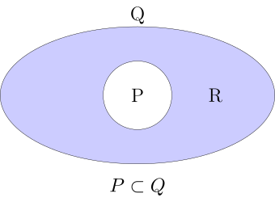

\( \def\b#1{\mathbf{#1}} \) \( \def\ds{\displaystyle} \) \( \def\txt#1{\ \textrm{#1} \ } \)
1. if and only if
수학 영어 원서 책을 읽다 보면 iff 라는 표현을 자주 접하게 되는데, 이 말은 if and only if 라는 말을 짧게 줄여서 쓴 표현이다.
1.1. 고등학교 학습 내용
이 표현의 의미를 설명하기에 앞서, 고등학교 때 배운 내용을 잠시 떠올려 보자. 우리는 다음의 두 수식은 같다고 배웠다.
| 수식 | 의미 |
|---|---|
\( (P \to Q) \ \land \ (Q \to P) \) |
if \(P\) then \(Q\) and if \(Q\) then \(P\) |
\( P = Q \) |
\(P\) is equal to \(Q\) |
즉, \( P \)가 \( Q \)의 필요 조건이자 충분 조건이면, \( P \) 와 \( Q \) 는 동치 관계라는 말이다.
이것을 다시 집합 기호를 빌려 표현하면, \( P \subset Q \) 이고, \( Q \subset P \) 이면, \( P = Q \) 가 된다.
1.2. if and only if 의 의미
\( Q \txt{iff} P \) 는 \(Q\) if and only if \(P\) 와 같다고 이미 앞에서 이야기 했는데, 이 말은 결국 \( (P \to Q) \ \land \ (Q \to P) \) 와도 같은 표현이다. 어떻게 같게 되는지를 살펴 보자.
먼저 \(Q\) if and only if \(P\) 를 두 부분으로 나누어 보면 다음과 같이 된다.
| 의미 | 수식 |
|---|---|
if \(P\) then \(Q\) \( \quad (\leftarrow \) \(Q\) if \(P)\) |
\( P \to Q \) |
only if \(P\) then \(Q\) \( \quad (\leftarrow \) \(Q\) only if \(P)\) |
\( Q \to P \) |
그런데 only if \(P\) then \(Q\) 부분이 어떻게 \( Q \to P \) 로 된다는 걸까? 직역하면 '오로지 \(P\)이면 \(Q\) 이다’가 되는데, 이것은 '\( P \to Q \)' 로 되는 것이 맞는 것이 아닌가 하는 생각이 들기 때문이다. 기존에는 이에 대한 설명이 없어서 내 나름대로 꽤 혼란스러웠던 기억이 나는데, 그 이유는 다음의 두 문장이 등가이기 때문이다.
-
I cry, only if I’m sad. (나는 슬플 때에만 운다.)
(\(Q\) only if \(P\))
-
If I cry, then I’m sad. (내가 울면 나는 슬프다.)
(\( Q \to P \))
1.3. 그림을 통한 이해
위의 예문을 아래의 그림을 통해 이해해 보자.
| (A) | (B) | (C) |
|---|---|---|
 |
|
|


-
그림 (A) 는 if \( P \) then \( Q \) 를 표시한다. 즉, \( P \) 는 슬픈 경우를, \( Q \) 는 우는 경우를 표시한다. 그리고 보라색으로 표시된 \( R \) 부분은, 슬퍼서 우는 경우를 제외한 모든 우는 경우, 즉 다시 말해서, 너무 기뻐서 울거나, 너무 아파서 울거나 또는 너무 분해서 우는 경우 등등을 표시한다.
-
그림 (B) 는 only if \( P \) then \( Q \) 를 표시한다. 오로지 슬플 때에만 운다고 함으로써, \( R \) 영역이 표시하고 있는 모든 경우를 \( Q \) 의 영역에서 배제하는 효과를 가지게 된다. 결과적으로 \( Q \) 의 영역이 \( P \) 의 영역으로 축소되게 되는데, 이것을 화살표로 표시하였다.
-
그림 (C) 는 최종적으로 \( P = Q \) 가 된 결과를 표시한다.
2. 부분 집합(subset)의 종류
집합 \( A \) 의 원소의 개수가 \( n \) 개이면, 집합 \( A \) 의 부분 집합의 총 개수는 \( 2^n \) 개이다. 예를 들어 집합 \( A = \{ 1, 2, 3 \} \) 일 때, 이 집합 \( A \) 의 부분 집합들을 전부 니열하면 다음과 같다.
\[ \emptyset, \{ 1 \}, \{ 2 \}, \{ 3 \}, \{ 1, 2 \}, \{ 1, 3 \}, \{ 2, 3 \}, \{ 1, 2, 3 \} \]
위의 부분 집합들은 다시 크게 2 종류로 다음과 같이 나뉜다.
2.1. Proper subset (진부분 집합: 眞部分 集合)
진부분 집합은 위의 집합 \( A \) 의 부분 집합들 중에서 집합 \( A \) 자기 자신을 제외한 나머지 모든 부분 집합들로 다음과 같다.
\[ \emptyset, \{ 1 \}, \{ 2 \}, \{ 3 \}, \{ 1, 2 \}, \{ 1, 3 \}, \{ 2, 3 \} \]
여기서 진부분 집합(眞部分 集合)의, 진(眞) 자는 '참 진' 자이다. 우리가 상식적으로 생각하는 부분 집합은 자기 자신 전체를 포함하지 않는다고 생각하는 것이 일반적이므로, 그런 부분 집합들을 '진정한' 의미의 부분 집합이라고 여겨서 진부분 집합이라고 부르게 된 것이다.
집합 \( A \) 가 집합 \( B \) 의 진부분 집합일 때 표기법은 다음과 같다.
\[ A \subset B \]
2.2. Improper subset (비진부분 집합: 非眞部分 集合)
집합 \( A \) 의 모든 부분 집합들 중에서 진부분 집합들을 제외한 나머지 부분 집합이므로, 집합 \( A \) 자기 자신만을 가리킨다.
\[ \{ 1, 2, 3 \} \]
집합 \( A \) 가 집합 \( B \) 의 비진부분 집합일 때의 표기법은 다음과 같다.
\[ A \subseteq B \]
2.3. 결론
다시 말해 진부분 집합은, 자기 자신의 전체 집합을 제외한 모든 부분 집합을 일컫는 말이고, 비진부분 집합은 부분 집합들 중 진부분 집합들을 제외한, 자기 자신의 전체 집합만을 가리킨다.
따라서 \( n \) 개의 원소를 가진 집합 \( A \) 의 부분 집합의 개수는 다음과 같다.
-
집합 \( A \) 의 모든 부분 집합의 개수 = \( 2^n \) 개
-
집합 \( A \) 의 진부분 집합의 개수 = \( 2^n - 1 \) 개
-
집합 \( A \) 의 비진부분 집합의 개수 = \( 1 \) 개